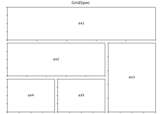
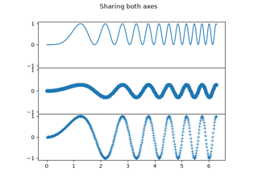
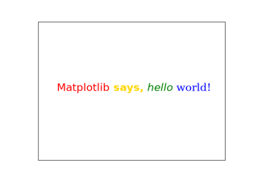

matplotlib.pyplot.figure#
- matplotlib.pyplot.figure(num=None, figsize=None, dpi=None, *, facecolor=None, edgecolor=None, frameon=True, FigureClass=<class 'matplotlib.figure.Figure'>, clear=False, **kwargs)[source]#
Create a new figure, or activate an existing figure.
- Parameters:
- numint or str or
FigureorSubFigure, optional A unique identifier for the figure.
If a figure with that identifier already exists, this figure is made active and returned. An integer refers to the
Figure.numberattribute, a string refers to the figure label.If there is no figure with the identifier or num is not given, a new figure is created, made active and returned. If num is an int, it will be used for the
Figure.numberattribute, otherwise, an auto-generated integer value is used (starting at 1 and incremented for each new figure). If num is a string, the figure label and the window title is set to this value. If num is aSubFigure, its parentFigureis activated.If num is a Figure instance that is already tracked in pyplot, it is activated. If num is a Figure instance that is not tracked in pyplot, it is added to the tracked figures and activated.
- figsize(float, float) or (float, float, str), default:
rcParams["figure.figsize"](default:[6.4, 4.8]) The figure dimensions. This can be
a tuple
(width, height, unit), where unit is one of "inch", "cm", "px".a tuple
(x, y), which is interpreted as(x, y, "inch").
One of width or height may be
None; the respective value is taken fromrcParams["figure.figsize"](default:[6.4, 4.8]).- dpifloat, default:
rcParams["figure.dpi"](default:100.0) The resolution of the figure in dots-per-inch.
- facecolorcolor, default:
rcParams["figure.facecolor"](default:'white') The background color.
- edgecolorcolor, default:
rcParams["figure.edgecolor"](default:'white') The border color.
- frameonbool, default: True
If False, suppress drawing the figure frame.
- FigureClasssubclass of
Figure If set, an instance of this subclass will be created, rather than a plain
Figure.- clearbool, default: False
If True and the figure already exists, then it is cleared.
- layout{'constrained', 'compressed', 'tight', 'none',
LayoutEngine, None}, default: None The layout mechanism for positioning of plot elements to avoid overlapping Axes decorations (labels, ticks, etc). Note that layout managers can measurably slow down figure display.
'constrained': The constrained layout solver adjusts Axes sizes to avoid overlapping Axes decorations. Can handle complex plot layouts and colorbars, and is thus recommended.
See Constrained layout guide for examples.
'compressed': uses the same algorithm as 'constrained', but removes extra space between fixed-aspect-ratio Axes. Best for simple grids of Axes.
'tight': Use the tight layout mechanism. This is a relatively simple algorithm that adjusts the subplot parameters so that decorations do not overlap. See
Figure.set_tight_layoutfor further details.'none': Do not use a layout engine.
A
LayoutEngineinstance. Builtin layout classes areConstrainedLayoutEngineandTightLayoutEngine, more easily accessible by 'constrained' and 'tight'. Passing an instance allows third parties to provide their own layout engine.
If not given, fall back to using the parameters tight_layout and constrained_layout, including their config defaults
rcParams["figure.autolayout"](default:False) andrcParams["figure.constrained_layout.use"](default:False).- **kwargs
Additional keyword arguments are passed to the
Figureconstructor.
- numint or str or
- Returns:
Notes
A newly created figure is passed to the
new_managermethod or thenew_figure_managerfunction provided by the current backend, which install a canvas and a manager on the figure.Once this is done,
rcParams["figure.hooks"](default:[]) are called, one at a time, on the figure; these hooks allow arbitrary customization of the figure (e.g., attaching callbacks) or of associated elements (e.g., modifying the toolbar). See mplcvd -- an example of figure hook for an example of toolbar customization.If you are creating many figures, make sure you explicitly call
pyplot.closeon the figures you are not using, because this will enable pyplot to properly clean up the memory.rcParamsdefines the default values, which can be modified in the matplotlibrc file.
Examples using matplotlib.pyplot.figure#



Gridspec for multi-column/row subplot layouts


Create multiple subplots using plt.subplots


Concatenate text objects with different properties
Make room for ylabel using axes_grid

Simple axis tick label and tick directions


Pan/zoom events of overlapping axes


Add lines directly to a figure


Create 2D bar graphs in different planes
Plot contour (level) curves in 3D
Plot contour (level) curves in 3D using the extend3d option
Project contour profiles onto a graph
Project filled contour onto a graph
Create 3D histogram of 2D data


Scales on 3D (Log, Symlog, etc.)
3D surface with polar coordinates

Triangular 3D filled contour plot
3D voxel plot of the NumPy logo
3D voxel / volumetric plot with RGB colors
3D voxel / volumetric plot with cylindrical coordinates

Long chain of connections using Sankey

SkewT-logP diagram: using transforms and custom projections
Rectangle and ellipse selectors


Positioning and orientation of imshow images
Arranging multiple Axes in a Figure

Complex and semantic figure composition (subplot_mosaic)


Writing mathematical expressions